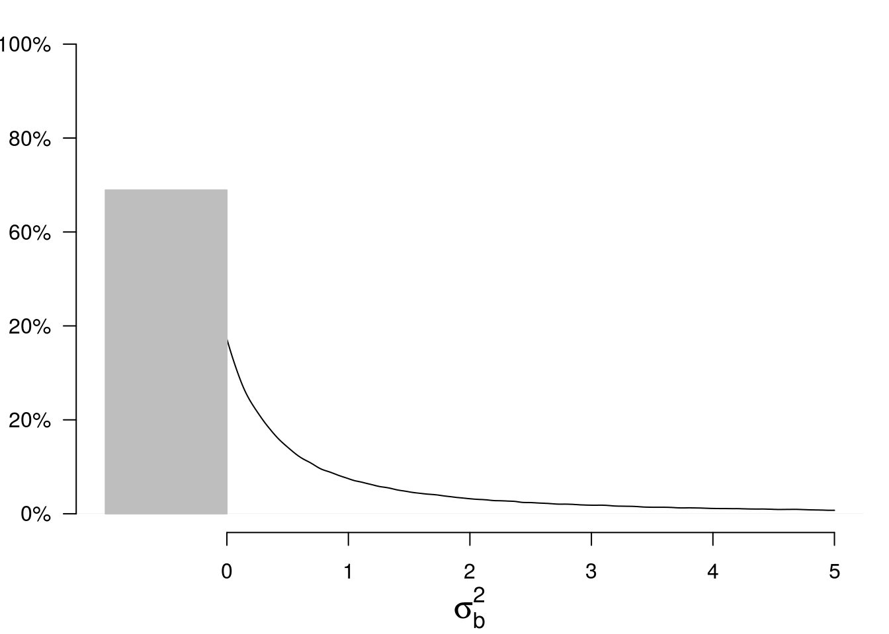

-
Testing the nullity of the between variance
2017-04-02
SourceThis article is a follow-up of the previous one.
Recall that we consider the balanced one-way random effect ANOVA model. We use the index \(i\in\{1,\ldots,I\}\) for the group index and the index \(j\in\{1,\ldots,J\}\) for the observation index within a group.
The function
SimDatabelow simulates from this model.library(data.table) SimData <- function(I, J, mu, sigmab, sigmaw){ group <- gl(I, J, labels=LETTERS[1:I]) DT <- data.table(group = group, y = mu + rep(rnorm(I, sd=sigmab), each=J) + rnorm(I*J, sd=sigmaw), key = "group") return(DT) } ( DT <- SimData(I=2, J=3, mu=0, sigmab=1, sigmaw=2) ) ## group y ## 1: A -2.28672582 ## 2: A -4.94563223 ## 3: A -2.70205730 ## 4: B 3.32696539 ## 5: B 0.82692703 ## 6: B -0.09389862The
summaryStatsfunction below calculates the three summary statistics \(\bar y\), \({\mathrm{ss}}_b\) and \({\mathrm{ss}}_w\).summaryStats <- function(DT){ DT[, `:=`(means = rep(mean(y), each=.N)), by=group] ssw <- DT[, { squares = (y-means)^2 .(ssw = sum(squares))}]$ssw ybar <- mean(DT$y) DT[, `:=`(Mean = ybar)] ssb <- DT[, { squares = (means-Mean)^2 .(ssb = sum(squares))}]$ssb return(c(ybar=ybar, ssb=ssb, ssw=ssw)) } summaryStats(DT) ## ybar ssb ssw ## -0.9790703 32.6405812 10.3587781The distribution of the generalized pivotal quantity \(G_{\sigma^2_b}\) (see previous article) can be seen as a “posterior distribution” of \(\sigma^2_b\):
set.seed(666) I <- 3L; J <- 4L mu <- 0; sigmab <- 0; sigmaw <- 2 # n <- 1e6L Z <- rnorm(n); U2b <- rchisq(n, I-1); U2w <- rchisq(n, I*(J-1)) # sss <- summaryStats(SimData(I, J, mu, sigmab, sigmaw)) Gsigma2b <- 1/J*(sss["ssb"]/U2b - sss["ssw"]/U2w) plot(density(Gsigma2b, from=-5, to=5)) abline(v=0, lty="dashed")
However, the between variance \(\sigma^2_b\) is a positive parameter. Therefore it makes sense to replace \(G_{\sigma^2_b}\) with \(\max\bigl\{0, G_{\sigma^2_b}\bigr\}\). Thus, our “posterior distribution” becomes a mixture of a Dirac mass at \(0\) and a density on the positive numbers:
par(mar=c(4,3,1,1)) p <- mean(Gsigma2b<0) plot(density(Gsigma2b, from=0, to=5), main=NA, xlim=c(-1,5), ylim=c(0,1), xlab=expression(sigma[b]^2), ylab=NA, axes=FALSE, cex.lab=1.5) polygon(x=c(0,0,-1,-1), y=c(0,p,p,0), col="gray", border="gray") axis(1, at=0:5) axis(2, at=seq(0,1,by=.2), las = 2, labels=c("0%","20%","20%","60%","80%","100%"))
The mass at \(0\) is the posterior probability that \(\sigma^2_b = 0\). Let us call \(p\) this probability.
It is quite interesting to observe the following fact. If \(\sigma^2_b = 0\), then simulations show that \(p\) seemingly follows a uniform distribution on \([0,1]\):
I <- 2L; J <- 3L mu <- 0; sigmab <- 0; sigmaw <- 2 # n <- 1e6L U2b <- rchisq(n, I-1); U2w <- rchisq(n, I*(J-1)) # nsims <- 10000L SIMS <- t(vapply(1:nsims, function(i){ summaryStats(SimData(I, J, mu, sigmab, sigmaw)) }, FUN.VALUE=numeric(3))) p <- numeric(nsims) for(i in 1:nsims){ ssb <- SIMS[i,"ssb"]; ssw <- SIMS[i,"ssw"] Gsigma2b <- 1/J*(ssb/U2b - ssw/U2w) p[i] <- mean(Gsigma2b<0) } curve(ecdf(p)(x)) abline(0, 1, lty="dashed", col="blue")
In fact, it exactly follows a uniform distribution. We will easily prove it.
Therefore, it provides a perfect \(p\)-value for the null hypothesis \(H_0\colon\{\sigma^2_b=0\}\), that is, rejecting \(H_0\) when \(p < \alpha\) provides a test with significance level \(\alpha\).
Proof
Assuming \(\sigma^2_b=0\), \[ \begin{align*} \Pr(G_{\sigma^2_b} < 0) & = \Pr\left(\frac{U^2_w}{U^2_b} < \frac{{\mathrm{ss}}_w}{{\mathrm{ss}}_b} \right) \\ & = F\left(\frac{{\mathrm{ss}}_w}{{\mathrm{ss}}_b} \right) \end{align*} \] where \(F\) is the cdf of \(\frac{U^2_w}{U^2_b}\).
The result follows from the fact that \(\frac{{\mathrm{SS}}_w}{{\mathrm{SS}}_b}\) has the same distribution as \(\frac{U^2_w}{U^2_b}\) when \(\sigma^2_b=0\), and from the well-known fact that \(G(X)\) follows the uniform distribution on \([0,1]\) whenever \(X\) is a continuous random variable and \(G\) is its cdf.
One-sided confidence intervals
I do not know whether this is exactly true, but, in view of simulations, the above property also seems to work for the null hypothesis \(H_0\colon\{\sigma^2_b=\theta_0\}\) for any \(\theta_0\), versus the one-sided alternative hypothesis \(H_1\colon\{\sigma^2_b>\theta_0\}\) or \(H_1\colon\{\sigma^2_b<\theta_0\}\). That would mean that the one-sided generalized confidence intervals about \(\sigma^2_b\) are exact.
sigmab <- 2 SIMS <- t(vapply(1:nsims, function(i){ summaryStats(SimData(I, J, mu, sigmab, sigmaw)) }, FUN.VALUE=numeric(3))) p <- test <- numeric(nsims) for(i in 1:nsims){ ssb <- SIMS[i,"ssb"]; ssw <- SIMS[i,"ssw"] Gsigma2b <- 1/J*(ssb/U2b - ssw/U2w) p[i] <- mean(Gsigma2b<sigmab^2) test[i] <- sigmab^2 < quantile(Gsigma2b, 0.95) } curve(ecdf(p)(x)) abline(0, 1, lty="dashed", col="blue")
# coverage mean(test) ## [1] 0.9476
- Home
- About
- PoirotReproducible Blogging with R Markdown
- SlidifyReproducible html5 slides from R markdown
- R-bloggersBlog posts about R, contributed by R bloggers worldwide.
- stla.overblogMy previous blog
- Timely Portfolio A great blog about R, Javascript, and more